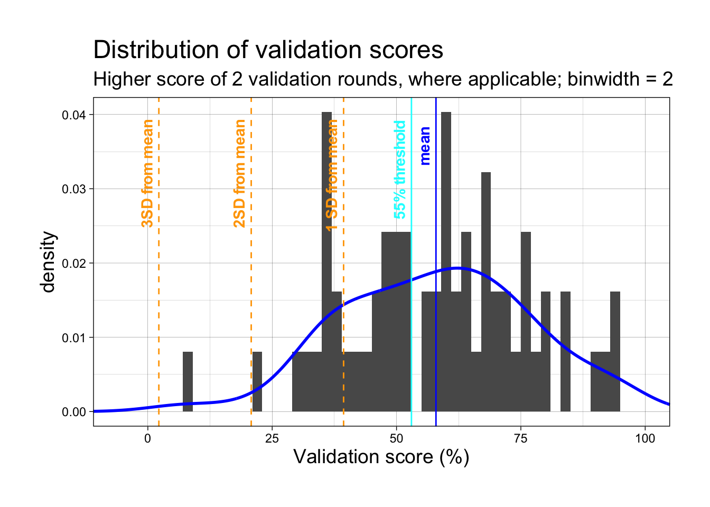
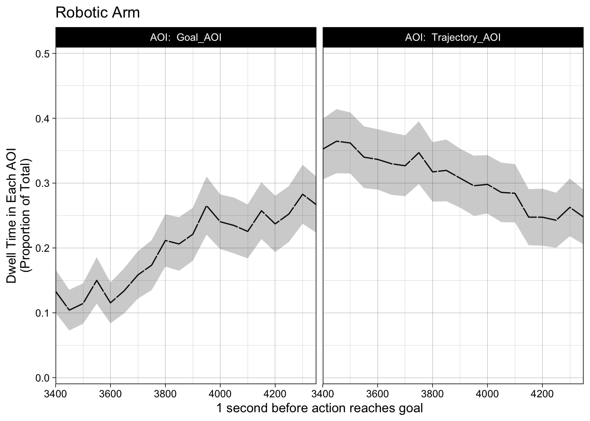
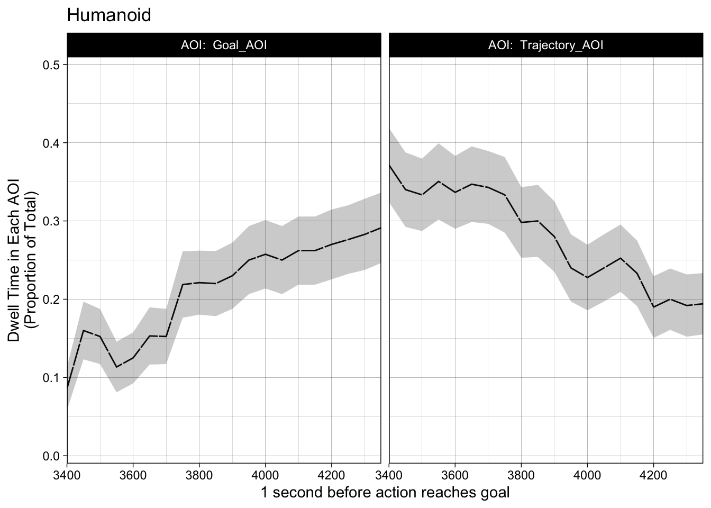
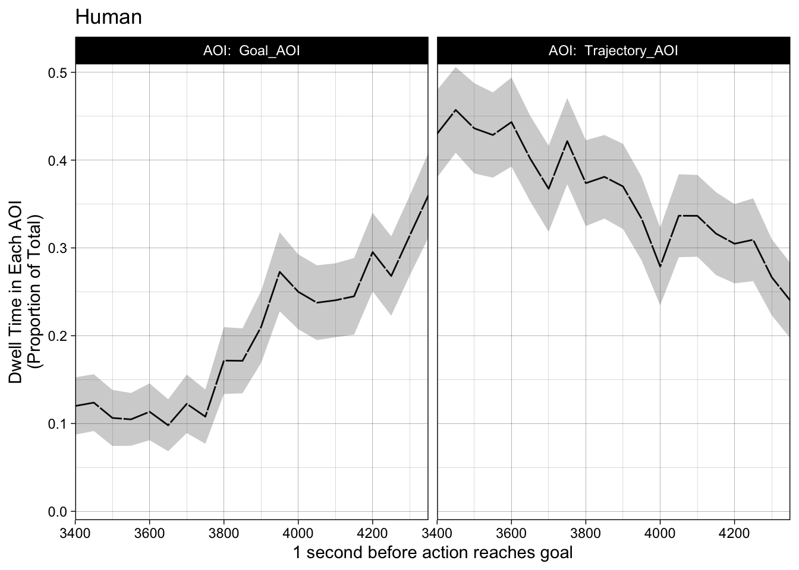

library(tidyverse) library(stringr) library(geomtextpath) # for annotating geom_vlineslibrary(mosaic, include.only ='favstats')library(knitr, include.only='kable')library(eyetrackingR) # add_aoi, need equal time windowslibrary(wesanderson)list_of_files_with_ID <-list.files(path ="data_5/",recursive =TRUE,pattern ="\\.csv$",full.names =TRUE)# writeLines(list_of_files, "filenames.txt")df <- list_of_files_with_ID %>%setNames(nm = .) %>%map_df(~read_csv(file = .x, col_types =cols()), .id ="participant") %>%mutate(participant =str_extract(participant, "V\\d{3}") )# above did not work with baseR pipe |>, had to use the tidy pipe
Examine validation scores
Validation scores are calculated percent_in_roi column.
The preregistered exclusion method is 55% validation accuracy within 2 rounds (gaze falls within 200px radius of 5 validation points).
Code
# column percent_in_roi has brackets [], function to removeremove_brackets <-function(col) {gsub("\\[|\\]", "", col)}# percent_in_roi originally is a string, e.g., "[100, 100, 100, 100, 100]"# remove brackets, str_split into list of 5 strings, e.g., c("100", "100", "100", "100", "100")df_percent_in_roi <- df |>group_by(participant) |>select(participant, percent_in_roi) |>drop_na() |>mutate(percent_in_roi =remove_brackets(percent_in_roi)) |>mutate(list_percent =str_split(percent_in_roi, ","))# split the list of string into 5 columns, for each column, as.numeric()df_calculate_mean <- df_percent_in_roi |>select(participant, list_percent) |>unnest_wider(list_percent, names_sep =".") |>mutate_at(c('list_percent.1', 'list_percent.2', 'list_percent.3', 'list_percent.4', 'list_percent.5'), as.numeric) |># calculate means for each row, i.e., each round of validation# create boolean column to indicate whether participants passed 55% threshold or notmutate(mean_col =rowMeans(cbind(list_percent.1, list_percent.2, list_percent.3, list_percent.4, list_percent.5), na.rm=F)) |>mutate(boolean =case_when(mean_col >=55.0~TRUE, mean_col <55~FALSE))rmarkdown::paged_table(head(df_calculate_mean, n=10))
Get higher validation score for participants, if 2 rounds of validation
Code
# generate participant list who reach 55% within 2 rounds of validation# retain rows with higher validation percent in mean_col, using top_n()participant_list_eye_tracking <- df_calculate_mean |>group_by(participant) |>top_n(1, mean_col)rmarkdown::paged_table(head(participant_list_eye_tracking))
Quick calculation: what if we were to use “validation score above 80% on any of 5 points”
# A tibble: 2 × 2
# Groups: above_80 [2]
above_80 n
<lgl> <int>
1 FALSE 8
2 TRUE 54
FALSE 8
TRUE 54
Conclusion: If we use the approach of 80% score on any validation point, then we would only exclude 8 participants.
Subset for participants who passed the threshold
narrow_participant_list_eye_tracking is the list of participants whose data we will use for eye-tracking analysis.
Code
# subset data of participants who passed the validation score thresholdnarrow_participant_list_eye_tracking <- participant_list_eye_tracking |>filter(boolean ==TRUE)rmarkdown::paged_table(head(narrow_participant_list_eye_tracking))
Descriptive statistics of all participants
Code
# descriptive stats on mean_col of ALL participantsdescriptive_stats_mean_validation_scores <-favstats(~mean_col, data = participant_list_eye_tracking)knitr::kable(descriptive_stats_mean_validation_scores, align ="c", caption ="Descriptive statistics, validation scores of all participants")
Descriptive statistics, validation scores of all participants
min
Q1
median
Q3
max
mean
sd
n
missing
7.567568
45.59098
59.43423
70.03414
94.59459
57.93148
18.57287
62
0
Histogram and density curve of all participants
Code
ggplot(participant_list_eye_tracking, aes(x=mean_col)) +#set histogram and density plotgeom_histogram(aes(y =after_stat(density)), binwidth =2) +geom_density(color="blue", linewidth =1) +#set themetheme_linedraw() +theme(plot.margin =margin(1,1,1,1, "cm"), plot.title =element_text(size=18), plot.subtitle =element_text(size=14), axis.title =element_text(size =14) ) +# add vlines to indicate mean, SD from mean, and where the 55% threshold is# using geomtextpath::geom_textvline which combines vline and annotation settings# meangeom_textvline(label ="mean", xintercept =mean(participant_list_eye_tracking$mean_col), color ="blue", vjust =-.5, hjust = .9, fontface ="bold") +geom_textvline(label ="3SD from mean", xintercept = (mean(participant_list_eye_tracking$mean_col) -sd(participant_list_eye_tracking$mean_col)*3), color ="orange", vjust =-.5, linetype="dashed", hjust = .9, fontface ="bold") +geom_textvline(label ="2SD from mean", xintercept=(mean(participant_list_eye_tracking$mean_col) -sd(participant_list_eye_tracking$mean_col)*2), color ="orange", vjust =-.5, linetype="dashed", hjust = .9, fontface ="bold") +geom_textvline(label ="1 SD from mean", xintercept=(mean(participant_list_eye_tracking$mean_col) -sd(participant_list_eye_tracking$mean_col)), color ="orange", vjust =-.5, linetype="dashed", hjust = .9, fontface ="bold") +#55% thresholdgeom_textvline(label ="55% threshold", xintercept =53, color ="cyan", vjust =-.5, hjust = .9, fontface ="bold") +# set plot titlesggtitle("Distribution of validation scores", subtitle ="Higher score of 2 validation rounds, where applicable; binwidth = 2") +# set axis labelsscale_x_continuous(name ="Validation score (%)", limits=c(-11, 105), expand =c(0, 0))

Box and whisker plot, validation scores of all participants
#table for each validation point, mean, sd of validation scoresm1 <-favstats(narrow_participant_list_eye_tracking$list_percent.1) |>mutate(point ="[25, 25]", .before = min)m2 <-favstats(narrow_participant_list_eye_tracking$list_percent.2) |>mutate(point ="[75, 25]", .before = min)m3 <-favstats(narrow_participant_list_eye_tracking$list_percent.3) |>mutate(point ="[50, 50]", .before = min)m4 <-favstats(narrow_participant_list_eye_tracking$list_percent.4) |>mutate(point ="[25,75]", .before = min)m5 <-favstats(narrow_participant_list_eye_tracking$list_percent.5) |>mutate(point ="[75, 75]", .before = min)#descriptive stats for each validation pointeach_validation_point <-rbind(m1, m2, m3, m4, m5) rownames(each_validation_point) <-NULL#turn off automatically assigned row namesknitr::kable(each_validation_point, align="c", caption ="**Participants who passed the 55% threshold, validation scores on each data point**")
Participants who passed the 55% threshold, validation scores on each data point
point
min
Q1
median
Q3
max
mean
sd
n
missing
[25, 25]
0.00000
85.78579
96.21859
100.00000
100
85.91404
23.22511
36
0
[75, 25]
0.00000
56.69643
80.81832
97.44521
100
69.97007
31.27701
36
0
[50, 50]
35.13514
82.00140
92.43717
100.00000
100
86.81598
16.32402
36
0
[25,75]
0.00000
15.54054
73.76931
90.29680
100
55.71681
39.47861
36
0
[75, 75]
0.00000
12.58600
65.68034
88.51351
100
55.20860
38.92314
36
0
Reaction time data
Cleanup
Code
remove_brackets <-function(col) {gsub("\\[|\\]", "", col)}# load data on the frame just before liquid appears, in millisecondsframe_before_outcome <-read_csv("ReactionTime_FrameBeforeOutcome.csv")df_reaction_time <- df |>select(participant, trial_index, rt, stimulus, response) |>drop_na()reactionTime <- df_reaction_time |>filter(trial_index >14) |># remove NA due to on-screen instructions appeared before trial_index 14 (response not captured)filter(trial_index !=16) |>filter(stimulus !="img/plus_thin.png") |># remove NA during fixation crossfilter(!grepl('>', stimulus)) |>mutate(stimulus =remove_brackets(stimulus)) |># remove bracketsmutate(stimulus =gsub("\\..*", "", stimulus)) |>#remove file extension .mp4mutate(stimulus =gsub(".*/","", stimulus)) |>#remove filepath videos/#rename the human stimuli as file names too tersemutate(stimulus =str_replace_all(stimulus, pattern ="HBC", replacement ="HumanBioCorrect")) |>mutate(stimulus =str_replace_all(stimulus, pattern ="HBS", replacement ="HumanBioSpill")) |>mutate(stimulus =str_replace_all(stimulus, pattern ="HNBC", replacement ="HumanNonbioCorrect")) |>mutate(stimulus =str_replace_all(stimulus, pattern ="HNBS", replacement ="HumanNonbioSpill")) |>group_by(participant) |>mutate(trial_index =dense_rank(desc(trial_index))) |>ungroup() |># add column to indicate if the condition was "Correct" (f) or "Error" (j)# the stimulus names (video file names) contains the string "Spill" or "Correct"mutate(correct_answer =case_when(str_detect(stimulus, "Spill") ~"j", str_detect(stimulus, "Correct") ~"f")) |># reaction time data were saved by jsPsych as string, we convert to numericmutate(rt =as.numeric(rt)) |># join with csv frame_before_outcome loaded above full_join(frame_before_outcome) |># add column to calculate how much in advance participants gave key-press responsemutate(rt.adjusted = (pour_moment - rt)) |># add column of booleans comparing whether participants' answers were correctmutate(accuracy =case_when( (response == correct_answer) ~TRUE, (response != correct_answer) ~FALSE), .before = pour_moment)rmarkdown::paged_table(head(reactionTime, n =15))
Calculate accuracy rate for each participant
Code
# group_by participant to work on exclusion 3accuracy_for_each_participant <- reactionTime |>group_by(participant, accuracy) |>count() |>mutate(percent_accuracy = n /36*100) |>filter(accuracy ==TRUE)rmarkdown::paged_table(head(accuracy_for_each_participant))
Apply exclusions (Exclusion 3 -> 2 -> 1)
Exclusions as preregistered 1) exclude implausible reaction times (implausible = react within first 25% of video time) 2) exclude those who fail to give a key-press response for > 20% of videos (i.e., more than 7 trials), indicate distraction or misunderstood instructions. 3) exclude participants > 20% misjudgment, i.e., < 80% accuracy
low_accuracy_participants <- accuracy_for_each_participant |>filter(percent_accuracy <80)# excluding 3 people (so far)# participants V14, V39, V52 will be excluded# copy the main df to play aroundreactionTime_copy <- reactionTimereactionTime_copy <- reactionTime_copy |>filter(!grepl('V014|V039|V052', participant))
Exclusion 2
Exclude participants who gave more than 7 NULL key-press responses
We can see that the highest number of NULL response (i.e., participants gave no key-press response during stimuli) was 3 trials. Nobody is excluded on Exclusion 2!
Code
na_in_response_time <- reactionTime_copy |>mutate(na_response_time =!is.na(reactionTime_copy$rt.adjusted)) |>group_by(participant, na_response_time) |>count() |># if we filter(na_response_time ==FALSE) |>arrange(desc(n))rmarkdown::paged_table(head(na_in_response_time))
Exclusion 1
Exclude implausible reaction times (replace with NA) Here we are excluding data, not participants.
Code
process_implausible_reaction_times <- reactionTime_copy |>select(participant, trial_index, rt, pour_moment) |># responding during first 25% of movement is considered implausiblemutate(implausible = pour_moment/4) |>mutate(rt_implausible =case_when(rt <implausible ~"replace_with_na", rt >= implausible ~"include"))# if we examine the column rt_implausible, we see that only 1 participant had 1 implausibleexamine_implausble <- process_implausible_reaction_times |>filter(rt_implausible =="replace_with_na")# CAUTION: Dataframe modified in place. reactionTime_copy <- reactionTime_copy |>mutate(rt =replace(rt, participant=="V015"& trial_index==2, NA), rt.adjusted =replace(rt.adjusted, participant=="V015"& trial_index==2, NA))
Treatment of late responses and wrong responses
Wrong responses become NAs
Code
reactionTime_remove_wrongResponse <- reactionTime_copy |>mutate(response_time_for_analysis =case_when(accuracy ==FALSE~NA, accuracy ==TRUE~ rt.adjusted))#sum(!complete.cases(reactionTime_remove_wrongResponse$response_time_for_analysis))# out of 60 participants# 192 wrong responses removed out of 2161 trials# 8.8% of responses were wrong
Code
reactionTime_preprocess <- reactionTime_remove_wrongResponse |>filter(stimulus !="Practice_dog_medium") |>select(-c(trial_index, rt, response, correct_answer, accuracy, pour_moment, rt.adjusted)) |>group_by(participant, stimulus) |># calculate mean for 3 rounds of participants' response timesmutate(mean_of_3_rounds =mean(response_time_for_analysis, na.rm =TRUE)) |># filter(!is.nan(mean_of_3_rounds)) |> select(-response_time_for_analysis) |>distinct() |># after combining into mean, only 1 data point was NA# sum(!complete.cases(reactionTime_preprocess$mean_of_3_rounds)) # 1# create columns for different conditions, for plottingmutate(agent =case_when(str_detect(stimulus, "Human") ~"Human", str_detect(stimulus, "Milo") ~"Humanoid", str_detect(stimulus, "Theo") ~"Robotic Arm", )) |>mutate(motion_type =case_when(str_detect(stimulus, "Bio") ~"Biological",str_detect(stimulus, "Nonbio") ~"Nonbiological", )) |>mutate(outcome_type =case_when(str_detect(stimulus, "Correct") ~"Correct", str_detect(stimulus, "Spill") ~"Error" )) |>filter(stimulus !="Practice_medium_dog") |>mutate(stimulus =factor(stimulus, levels=c("TheoBioCorrect", "TheoBioSpill", "TheoNonbioCorrect", "TheoNonbioSpill", "MiloBioCorrect", "MiloBioSpill", "MiloNonbioCorrect", "MiloNonbioSpill", "HumanBioCorrect", "HumanBioSpill", "HumanNonbioCorrect", "HumanNonbioSpill")))reactionTime_preprocess <- reactionTime_preprocess |>mutate(mean_of_3_rounds =case_when(mean_of_3_rounds <-200~NA, TRUE~ mean_of_3_rounds)) # participants to be excluded due to late responses: 7 people#2, 4, 8, 16, 17, 32, 34reactionTime_preprocess <- reactionTime_preprocess |>filter(!participant %in%c("V002", "V004", "V008", "V016", "V017", "V032", "V034"))sum(!complete.cases(reactionTime_preprocess$mean_of_3_rounds)) #92
late <- reactionTime_copy |>filter(stimulus !="Practice_dog_medium") |>mutate(in_time_or_late_response =case_when(predict_in_advance >=0~"in time", predict_in_advance <0~"late")) #count how many in-time, late, NAlate_count <- late |>group_by(stimulus, in_time_or_late_response) |>count()#print(late_count)
Half violin
Code
"%||%"<-function(a, b) {if (!is.null(a)) a else b}geom_flat_violin <-function(mapping =NULL, data =NULL, stat ="ydensity",position ="dodge", trim =TRUE, scale ="area",show.legend =NA, inherit.aes =TRUE, ...) {layer(data = data,mapping = mapping,stat = stat,geom = GeomFlatViolin,position = position,show.legend = show.legend,inherit.aes = inherit.aes,params =list(trim = trim,scale = scale, ... ) )}GeomFlatViolin <-ggproto("Violinist", Geom,setup_data =function(data, params) { data$width <- data$width %||% params$width %||% (resolution(data$x, FALSE) *0.9)# ymin, ymax, xmin, and xmax define the bounding rectangle for each group data %>%group_by(group) %>%mutate(ymin =min(y),ymax =max(y),xmin = x,xmax = x + width /2) },draw_group =function(data, panel_scales, coord) {# Find the points for the line to go all the way around data <-transform(data, xminv = x,xmaxv = x + violinwidth * (xmax - x))# Make sure it's sorted properly to draw the outline newdata <-rbind(plyr::arrange(transform(data, x = xminv), y), plyr::arrange(transform(data, x = xmaxv), -y))# Close the polygon: set first and last point the same# Needed for coord_polar and such newdata <-rbind(newdata, newdata[1,]) ggplot2:::ggname("geom_flat_violin", GeomPolygon$draw_panel(newdata, panel_scales, coord)) },draw_key = draw_key_polygon,default_aes =aes(weight =1, colour ="grey20", fill ="white", size =0.5,alpha =NA, linetype ="solid"),required_aes =c("x", "y") )
Deprecated: Distribution of all key-presses, including WRONG ones
In-time and Late Responses shown in different colors across the vertical “0” line
Check Block 1, 2, 3 - No Difference in Speed and Accuracy
Code
reactionTime_copy |>filter(stimulus !="Practice_dog_medium") |>mutate(block =case_when(trial_index <13~"1", trial_index >24~"3", TRUE~"2"), .before = rt) |>mutate(agent =case_when(str_detect(stimulus, "Theo") ~"Robotic Arm", str_detect(stimulus, "Milo") ~"Humanoid", str_detect(stimulus, "Human") ~"Human", )) |>mutate(agent =fct_relevel(agent, c("Robotic Arm", "Humanoid", "Human"))) |>ggplot(aes(x =fct_rev(stimulus), y = predict_in_advance, fill = block))+geom_boxplot(alpha = .6)+geom_point(position=position_jitterdodge(jitter.width = .05), alpha = .5) +# add line to see where 0 isgeom_hline(yintercept =0, vjust =1, hjust =1, size =1, color ="blue") +scale_fill_viridis_d(option ="E") +scale_x_discrete(name ="Conditions", labels = labels_reverse,expand =c(0.02, 0, .08, 0)) +scale_y_continuous(name ="Key press response time", expand =c(0.02, 0, .08, 0)) +coord_flip() +# facet_wrap(~agent + block, scales = "free_y", drop = TRUE) +theme_linedraw() +theme(plot.margin =margin(1,1,1,1, "cm"), axis.title =element_text(size =16), plot.title =element_text(size=18), axis.text=element_text(size=12), legend.position="none" ) +ggtitle("Response times by block,\nINCLUDE LATE AND WRONG RESPONSES")
Eye Tracking Data Cleaning
Major cleanup
Code
#helpersget_number <-function (i) {gsub("[^.,[:digit:]]","", i)}get_text <-function (j) {gsub('\\d', "", j)}# list of participants who met the validation score thresholdparticipant_list <- narrow_participant_list_eye_tracking$participanteyetrack_df <- df |>select(participant, trial_index, stimulus, webgazer_data, webgazer_targets) |>filter(!trial_index %in% (0:14)) |># filter out on-screen instructions and calibration phasefilter(stimulus !="img/plus_thin.png") |># remove inter-trial fixation crossfilter(stimulus !='["videos/Practice_dog_medium.mp4"]') |># remove practice roundfilter(!grepl('<p>', stimulus)) |>filter(!grepl('<h', stimulus)) |># remove on-screen instructionsmutate(stimulus =remove_brackets(stimulus)) |># remove bracketsmutate(stimulus =gsub("\\..*", "", stimulus)) |>#remove file extension .mp4mutate(stimulus =gsub(".*/","", stimulus)) |>#remove filepath videos/# rename the human stimuli as file names too tersemutate(stimulus =str_replace_all(stimulus, pattern ="HBC", replacement ="HumanBioCorrect")) |>mutate(stimulus =str_replace_all(stimulus, pattern ="HBS", replacement ="HumanBioSpill")) |>mutate(stimulus =str_replace_all(stimulus, pattern ="HNBC", replacement ="HumanNonbioCorrect")) |>mutate(stimulus =str_replace_all(stimulus, pattern ="HNBS", replacement ="HumanNonbioSpill")) |>filter(str_detect(stimulus, 'Correct')) |># remove all Spill conditions# set trial_index to rank, everyone should have 18 trials (Correct conditions only, no Spill)group_by(participant) |>mutate(trial_index =dense_rank(desc(trial_index))) |>ungroup() |>filter(participant %in% participant_list) |># Below lines process video positions# `webgazer-targets` contains data on where the stimuli were positioned on-screen # (i.e., top, left, right, bottom borders around where the stimulus is shown)mutate(webgazer_targets =gsub('[^.,[:alnum:]]+','', webgazer_targets)) |>mutate(webgazer_targets =gsub('jspsychvideokeyboardresponsestimulus', '', webgazer_targets)) |>mutate(webgazer_targets =str_split(webgazer_targets, ",")) |>unnest_wider(webgazer_targets, names_sep =",") |># remove columns `webgazer_targets, 3` and `4`; contains dimensions of stimuli# dimensions were fixed in the experiment as 1080 x 607.5select(-c(`webgazer_targets,3`, `webgazer_targets,4`)) |>rename(x =`webgazer_targets,1`, y =`webgazer_targets,2`, top =`webgazer_targets,5`, right =`webgazer_targets,6`, bottom =`webgazer_targets,7`, left =`webgazer_targets,8`) |># data are stored string, so run get_number function above, convert to numericmutate_at(c("x", "y", "top", "right", "bottom", "left"), get_number) |>mutate_at(c("x", "y", "top", "right", "bottom", "left"), as.numeric) |># remove participant V039 due to no Webgazer data savedfilter(participant!="V039") |># regex on webgazer_data# webgaer_data is the gaze datamutate(webgazer_data =gsub('[^.,[:alnum:]]+','', webgazer_data)) |>mutate(webgazer_data =gsub('"', '', webgazer_data)) |>mutate(webgazer_data =str_split(webgazer_data, ","))# video positions are available in the data, under webgazer_targets# save the video positions in a separate tibblevideo_positions <- eyetrack_df |>select(participant, stimulus, x, y, top, right, bottom, left) |>select(-stimulus) |>distinct() |># we only need top and left positionsselect(participant, top, left)# 35 people remaining! gaze_coordinates <- eyetrack_df |>select(participant, trial_index, stimulus, webgazer_data) |>unnest(webgazer_data, names_sep =",") |>mutate(letter =get_text(webgazer_data), digit =get_number(webgazer_data)) |>mutate(digit =as.numeric(digit)) |>select(-webgazer_data) |># add row numbers for id_cols in pivot_wider. Based on nrow(gaze_coordinates) / 3# generate list of numbers, each repeats 3 times, i.e., c(1, 1, 1, ... 135250, 135250, 135250)mutate(row =rep(1:135250, each=3))# gaze_coordinates is split into 2 tibbles. First, pivot_wider the letter and digitgaze_coordinates_pivot <- gaze_coordinates |>pivot_wider(names_from = letter, values_from = digit, id_cols = row)# then, another tibble keep only distinct rows for cols c(participant, trial_index, stimulus)remove_coordinates_columns <- gaze_coordinates |>select(-c(letter, digit)) |>distinct()# join the 2 tibbles back together by row number, remove row number columncoordinates <-full_join(remove_coordinates_columns, gaze_coordinates_pivot, by ="row") |>select(-row)
Adjust for video positions
AOI boundaries are based on the stimuli’s dimensions (1080 x 607.5). Before AOI analysis, participants’ gaze position on-screen (x, y) is adjusted by: ( (x - left boundary), (y - top boundary) )
Code
# join the coordinates data and the video positions data into coordinates_adjusted <-left_join(coordinates, video_positions, by ="participant") |>mutate(x.adjusted = x - left, .before = x) |>mutate(y.adjusted = y - top, .before = y) |>select(-c(x, y, top, left)) |># a few negative values which means that participant gaze was outside of the stimuli (elsewhere on screen). Those negative values are all > -50 which is in theory on the edge of the stimuli. Converting negative values to 0. mutate(across(c(x.adjusted, y.adjusted), ~ifelse(.x <0, 0.5, .x)))
When participants are looking OUTSIDE the stimuli, to the bottom or right blank borders on screen, I convert their gaze positions. This is done so that the trackloss check will still count these measurements. The assigned positions are just outside the video stimuli presentation coordinates (1080 x 607.5).
goal_aoi <-read_csv("AOI_definitions.csv") |>pivot_wider(names_from = Goal, values_from = Pixel, id_cols = Condition) |>rename(stimulus = Condition) # AOI settings must have idential column name with the eyetracking data column name for experimental conditions# EyetrackingR::add_aoi Goal AOIeyetrack_data <-add_aoi(coordinates_adjusted, goal_aoi, x_col ="x.adjusted", y_col ="y.adjusted",aoi_name ="Goal_AOI", x_min_col ="Left", x_max_col ="Right",y_min_col ="Top",y_max_col ="Bottom")trajectory_aoi <-read_csv("Trajectory_AOI.csv") |>rename(stimulus = Condition)# add Trajectory AOI# careful to use the right dataframes and not overwrite the dataeyetrack_data <-add_aoi(eyetrack_data, trajectory_aoi, x_col ="x.adjusted", y_col ="y.adjusted",aoi_name ="Trajectory_AOI", x_min_col ="Left", x_max_col ="Right",y_min_col ="Top",y_max_col ="Bottom")
Trackloss - Manual check
Manually checking trackloss as EyetrackingR does not handle this. Stimuli were presented as 7999 milliseconds in length.
Trackloss at participant level
Below table shows participants whose number of measurements is < 4000 measurements. 4000 / 144 = average sampling rate of 27.777
Code
# EyetrackingR requires trackloss column. It appears I have to check this myself. number_of_measurements_by_participant <- eyetrack_data |>group_by(participant) |>count()# table shown in ascending order for number of measurementsrmarkdown::paged_table(head(number_of_measurements_by_participant, n=15))
Trackloss at stimuli level (Each stimulus is shown 3 times during the experiment. 8 seconds x 3 = 24 seconds.) Examining per stimuli for those with < 4000 measurements:
Code
# subsetting data for the relatively higher trackloss participantspossible_high_trackloss_participants <- eyetrack_data |>group_by(participant) |>count() |>filter(n <4000)# counting by stimulus examine_trackloss <- eyetrack_data |>group_by(participant, stimulus) |>count() |>arrange(n)# turns out lowest count, participant "V008", still has 476 measurements for a stimulus# 476 measurements / 24 seconds = 19.8 measurements per secondrmarkdown::paged_table(head(examine_trackloss, n =10))
Trackloss at trial level
The lowest sampling rates occurred for participant V008 (shown in table: 155 measurements taken for 8 seconds of a single stimulus = 19.3 measurements/second). At least we didn’t have anyone who walked away from the camera etc. during the eye-tracking!
eyetrack_calculate_mean <- eyetrack_data_predictive_proportion_ceiling |>group_by(participant, stimulus) |>mutate(mean_proportion =mean(proportion))rmarkdown::paged_table(head(eyetrack_calculate_mean, n =20))
DEPRECATED Exploring 1000 ms and 500 ms before pour_moment
Time Bins of 50
Code
# create vector where the bins of 50ms each # total length of videos were 7999msv <-seq(1, 8000, by =50)v_intervals <-as_tibble(cbind(v, findInterval(v, v)))# using findInterval in baseR to match the timestamp from the raw data to the interval in v# timestamps between 1 and 50 will become 1 in `interval`, etc.equal_bins <- eyetrack_data |>mutate(interval =findInterval(t, v), .after = t) |>group_by(participant, stimulus, trial_index, interval) |># mean of x, y coordinates within same tin binmutate(x.binned =mean(x.adjusted, na.rm =TRUE), .before = t) |>mutate(y.binned =mean(y.adjusted, na.rm =TRUE), .before = t) |># remove the raw data columnsselect(-c(x.adjusted, y.adjusted, t))|># get unique rowdistinct() |># map the interval 1, 2, 3... back into milliseconds 1, 51, 101... left_join(v_intervals, join_by("interval"=="V2")) |>rename(time = v) |>left_join(frame_before_outcome, by ="stimulus") |># round the pouring moment down to the nearest bin of 50mutate(pour_bin = plyr::round_any(pour_moment,50,floor) +1) |>#convert trial_index into block 1, block 2, block 3mutate(block =case_when(trial_index <7~"1", trial_index >12~"3", TRUE~"2"), .before = stimulus) equal_bins_play <- equal_bins |>ungroup() |>select(-c(interval, pour_moment, pour_bin, block, Goal_AOI, Trajectory_AOI)) |>mutate(trackloss =FALSE) |>distinct() |># mutate time to equalise human videos being 100-150ms behind on pouring time# humanbiocorrect is -150ms# humannonbiocorrect is -100msmutate(time.adj =case_when(stimulus =="HumanBioCorrect"~ (time -150), stimulus =="HumanNonbioCorrect"~ (time -100), TRUE~ time)) |>mutate(agent =case_when(str_detect(stimulus, "Human") ~"Human", str_detect(stimulus, "Milo") ~"Humanoid", str_detect(stimulus, "Theo") ~"Robotic Arm", )) |>mutate(motion_type =case_when(str_detect(stimulus, "Bio") ~"Biological",str_detect(stimulus, "Nonbio") ~"Nonbiological", )) |>select(-time)# add AOI again# goal_aoi <- read_csv("AOI_definitions.csv") |> # pivot_wider(names_from = Goal, values_from = Pixel, id_cols = Condition) |> # rename(stimulus = Condition)
#Robotic Arm Time Sequence time_sequence_data |>group_by(participant) |>filter(motion_type =="Biological") |>filter(agent =="Robotic Arm") |>plot() +theme_linedraw() +coord_cartesian(ylim =c(0,0.5)) +scale_x_continuous(name ="1 second before action reaches goal", expand =c(0,0)) +scale_y_continuous(name ="Dwell Time in Each AOI\n(Proportion of Total)", expand =c(-.02,0.02)) +ggtitle("Robotic Arm")

Humanoid visual time sequence
Code
#Humanoid Arm Time Sequence time_sequence_data |>group_by(participant) |>filter(motion_type =="Biological") |>filter(agent =="Humanoid") |>plot() +theme_linedraw() +coord_cartesian(ylim =c(0,0.5)) +scale_x_continuous(name ="1 second before action reaches goal", expand =c(0,0)) +scale_y_continuous(name ="Dwell Time in Each AOI\n(Proportion of Total)", expand =c(-.02,0.02)) +ggtitle("Humanoid")

Human Visual Time Sequence
Code
#Human Time Sequence time_sequence_data |>group_by(participant) |>filter(motion_type =="Biological") |>filter(agent =="Human") |>plot() +theme_linedraw() +coord_cartesian(ylim =c(0,0.5)) +scale_x_continuous(name ="1 second before action reaches goal", expand =c(0,0)) +scale_y_continuous(name ="Dwell Time in Each AOI\n(Proportion of Total)", expand =c(-.02,0.02)) +ggtitle("Human")

Aggregate: Calculate predictive gaze
Code
time_window_aggregate <- time_window_data |>select(c(participant, agent, motion_type, trial_index, SamplesInAOI, AOI)) |>group_by(participant, agent, motion_type, trial_index, AOI, SamplesInAOI) |>summarise() |>pivot_wider(names_from ="AOI", values_from ="SamplesInAOI") |>mutate(predictive = Goal_AOI / (Goal_AOI + Trajectory_AOI) ) |># in the data, NaN denotes that both AOIs had 0 gaze, we convert to NAmutate(predictive =ifelse(is.nan(predictive), NA, predictive)) |># replace all infinity to 5# when infinity, gaze was recorded only on Goal AOI, but none on Trajecotry AOI# this means the participant was fixated on the Goal and not looking at the movement# too many decimal points can't see anythingmutate(across(where(is.numeric), round, 3))# exclude due to not looking: V015, V032, V041# exclude due to fixating only on Goal: V050time_window_aggregate <- time_window_aggregate |>filter(!participant %in%c("V015", "V029", "V032", "V041", "V050"))analyse <- time_window_aggregate# check how many participants had too many NAs (over 6 videos in which they did not look at either of our AOIs)# count_participants_not_looking <- time_window_aggregate |> group_by(participant, trial_index) |># filter(is.na(predictive)) |> group_by(participant) |> count() |> # filter(n > 7)# exclude participants# analyse <- time_window_aggregate |> filter(!participant %in% c(count_participants_not_looking$participant))# knitr::kable(count_participants_not_looking, align = "c", # caption = "Participants excluded for not looking at any of our AOIs")
Check participants who failed to look at both AOIs
Check participants who fixated only on the Goal AOI
Code
explore_infinity <- analyse |>filter(predictive ==1) |>group_by(participant) |>count()check_infinity <- explore_infinity$participant# exploring - how many infinity# explore_infinite <- analyse |> filter(is.infinite(predictive)) |># group_by(participant) |> count()# explore_infinite |> filter(n > 6)# Infinity processed into NA# 2 more people are excluded because for over 9 of 12 trials, they fixated only on the goal, and not on the trajectory# analyse <- analyse |> mutate_if(is.numeric, ~replace(., is.infinite(.), NA))
Mean Predictive Gaze calculated here
(Looks to Goal) / (Looks to Goal) + (Looks to Trajectory) if people are only fixated on the trajectory, we expect this to be close to 0 if people are fixated on the goal, it will be close to 1.
# Function to create the half violin (ref: https://psyteachr.github.io/quant-fun-v2/visualisation.html, section 13.10.2)"%||%"<-function(a, b) {if (!is.null(a)) a else b}geom_flat_violin <-function(mapping =NULL, data =NULL, stat ="ydensity",position ="dodge", trim =TRUE, scale ="area",show.legend =NA, inherit.aes =TRUE, ...) {layer(data = data,mapping = mapping,stat = stat,geom = GeomFlatViolin,position = position,show.legend = show.legend,inherit.aes = inherit.aes,params =list(trim = trim,scale = scale, ... ) )}GeomFlatViolin <-ggproto("Violinist", Geom,setup_data =function(data, params) { data$width <- data$width %||% params$width %||% (resolution(data$x, FALSE) *0.9)# ymin, ymax, xmin, and xmax define the bounding rectangle for each group data %>%group_by(group) %>%mutate(ymin =min(y),ymax =max(y),xmin = x,xmax = x + width /2) },draw_group =function(data, panel_scales, coord) {# Find the points for the line to go all the way around data <-transform(data, xminv = x,xmaxv = x + violinwidth * (xmax - x))# Make sure it's sorted properly to draw the outline newdata <-rbind(plyr::arrange(transform(data, x = xminv), y), plyr::arrange(transform(data, x = xmaxv), -y))# Close the polygon: set first and last point the same# Needed for coord_polar and such newdata <-rbind(newdata, newdata[1,]) ggplot2:::ggname("geom_flat_violin", GeomPolygon$draw_panel(newdata, panel_scales, coord)) },draw_key = draw_key_polygon,default_aes =aes(weight =1, colour ="grey20", fill ="white", size =0.5,alpha =NA, linetype ="solid"),required_aes =c("x", "y") )
Code
# impute grand mean to those outliers at 1.5 median(analyse_mean$mean_pred, na.rm =TRUE) #0.3456667
# create vector where the bins of 50ms each # total length of videos were 7999ms# v20 <- seq(1, 8000, by = 20)# v20_intervals <- as_tibble(cbind(v20, findInterval(v20, v20)))# using findInterval in baseR to match the timestamp from the raw data to the interval in v# timestamps between 1 and 50 will become 1 in `interval`, etc.# equal_bins_20 <- eyetrack_data |> # mutate(interval = findInterval(t, v20), .after = t) |># group_by(participant, stimulus, trial_index, interval) |># # mean of x, y coordinates within same tin bin# mutate(x.binned = mean(x.adjusted, na.rm = TRUE), .before = t) |> # mutate(y.binned = mean(y.adjusted, na.rm = TRUE), .before = t) |> # # remove the raw data columns# select(-c(x.adjusted, y.adjusted, t))|> # # get unique row# distinct() |> # # map the interval 1, 2, 3... back into milliseconds 1, 51, 101... # left_join(v_intervals, join_by("interval" == "V2")) |># rename(time = v) |> # left_join(frame_before_outcome, by = "stimulus") |> # # round the pouring moment down to the nearest bin of 50# mutate(pour_bin = plyr::round_any(pour_moment,50,floor) + 1) |> # #convert trial_index into block 1, block 2, block 3# mutate(block = case_when(trial_index < 7 ~ "1", # trial_index > 12 ~ "3", # TRUE ~ "2"), .before = stimulus)
For dispersion algorithms (see [Blignaut (2009)](https://link.springer.com/content/pdf/10.3758/APP.71.4.881.pdf). Making assumption that everyone was 60cm away from screen. Visual angle for fixations set at .9 degrees (default value set in function).